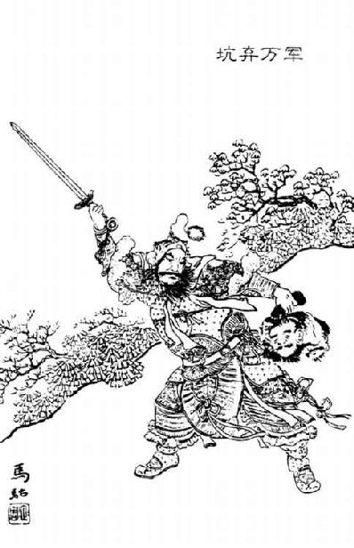

刘敬 者，齐人也。汉 五年，戍陇西 ，过洛阳 ，高帝 在焉。娄敬 脱輓辂，衣其羊裘，见齐 人虞将军 曰：“臣愿见上言便事。”虞将军 欲与之鲜衣，娄敬 曰：“臣衣帛，衣帛见；衣褐，衣褐见：终不敢易衣。”于是虞将军 入言上。上召入见，赐食。
已而问娄敬 ，娄敬 说曰：“陛下都洛阳 ，岂欲与周室 比隆哉？”上曰：“然。”娄敬 曰：“陛下取天下与周室 异。周 之先自后稷 ，尧 封之邰 ，积德累善十有馀世。公刘 避桀 居豳 。太王 以狄 伐故，去豳 ，杖马箠居岐 ，国人争随之。及文王 为西伯 ，断虞芮 之讼，始受命，吕望 、伯夷 自海滨来归之。武王 伐纣 ，不期而会孟津 之上八百诸侯，皆曰纣 可伐矣，遂灭殷 。成王 即位，周公 之属傅相焉，乃营成周洛邑 ，以此为天下之中也，诸侯四方纳贡职，道里均矣，有德则易以王，无德则易以亡。凡居此者，欲令周 务以德致人，不欲依阻险，令后世骄奢以虐民也。及周 之盛时，天下和洽，四夷乡风，慕义怀德，附离而并事天子，不屯一卒，不战一士，八夷大国之民莫不宾服，效其贡职。及周 之衰也，分而为两，天下莫朝，周 不能制也。非其德薄也，而形势弱也。今陛下起丰沛 ，收卒三千人，以之径往而卷蜀汉 ，定三秦 ，与项羽 战荥阳 ，争成皋 之口，大战七十，小战四十，使天下之民肝脑涂地，父子暴骨中野，不可胜数，哭泣之声未绝，伤痍者未起，而欲比隆于成康 之时，臣窃以为不侔也。且夫秦地被山带河 ，四塞以为固，卒然有急，百万之众可具也。因秦 之故，资甚美膏腴之地，此所谓天府者也。陛下入关而都之，山 东虽乱，秦 之故地可全而有也。夫与人斗，不搤其亢，拊其背，未能全其胜也。今陛下入关而都，案秦 之故地，此亦描天下之亢而拊其背也。”
高帝 问群臣，群臣皆山 东人，争言周 王数百年，秦 二世即亡，不如都周 。上疑未能决。及留侯 明言入关便，即日车驾西都关中 。
于是上曰：“本言都秦 地者娄敬 ，‘娄’者乃‘刘’也。”赐姓刘氏 ，拜为郎中，号为奉春君 。
汉 七年，韩王信 反，高帝 自往击之。至晋阳 ，闻信 与匈奴 欲共击汉 ，上大怒，使人使匈奴 。匈奴 匿其壮士肥牛马，但见老弱及羸畜。使者十辈来，皆言匈奴 可击。上使刘敬 复往使匈奴 ，还报曰：“两国相击，此宜夸矜见所长。今臣往，徒见羸瘠老弱，此必欲见短，伏奇兵以争利。愚以为匈 奴 不可击也。”是时汉 兵已逾句注 ，二十馀万兵已业行。上怒，骂刘敬 曰：“齐 虏！以口舌得官，今乃妄言沮吾军。”械系敬广武 。遂往，至平城 ，匈奴 果出奇兵围高帝白登 ，七日然后得解。高帝 至广武 ，赦敬 ，曰：“吾不用公言，以困平城 。吾皆已斩前使十辈言可击者矣。”乃封敬 二千户，为关内侯，号为建信侯 。
高帝 罢平城 归，韩王信 亡入胡 。当是时，冒顿 为单于，兵强，控弦三十万，数苦北边。上患之，问刘敬 。刘敬 曰：“天下初定，士卒罢于兵，未可以武服也。冒顿 杀父代立，妻群母，以力为威，未可以仁义说也。独可以计久远子孙为臣耳，然恐陛下不能为。”上曰：“诚可，何为不能！顾为奈何？”刘敬 对曰：“陛下诚能以適长公主妻之，厚奉遗之，彼知汉 適女送厚，蛮夷必慕以为阏氏，生子必为太子，代单于。何者？贪汉 重币。陛下以岁时汉 所馀彼所鲜数问遗，因使辩士风谕以礼节。冒顿 在，固为子婿；死，则外孙为单于。岂尝闻外孙敢与大父抗礼者哉？兵可无战以渐臣也。若陛下不能遣长公主，而令宗室及后宫诈称公主，彼亦知，不肯贵近，无益也。”高帝 曰：“善。”欲遣长公主。吕后 日夜泣，曰：“妾唯太子、一女，奈何弃之匈奴 ！”上竟不能遣长公主，而取家人子名为长公主，妻单于。使刘敬 往结和亲约。
刘敬
从匈奴
来，因言“匈奴河南白羊
、楼烦王
，去长安
近者七百里，轻骑一日一夜可以至秦中
。秦中
新破，少民，地肥饶，可益实。夫诸侯初起时，非齐
诸田
，楚昭
、屈
、景
莫能兴。今陛下虽都关中
，实少人。北近胡
寇，东有六国之族，宗强，一日有变，陛下亦未得高枕而卧也。臣愿陛下徙齐
诸田
，楚昭
、屈
、景
，燕
、赵
、韩
、魏
后，及豪桀名家居关中
。无事，可以备胡
；诸侯有变，亦足率以东伐。此强本弱末之术也”。上曰：“善。”乃使刘敬
徙所言关中
十馀万口。
叔孙通 者，薛 人也。秦 时以文学征，待诏博士。数岁，陈胜 起山东 ，使者以闻，二世 召博士诸儒生问曰：“楚 戍卒攻蕲 入陈 ，于公如何？”博士诸生三十馀人前曰：“人臣无将，将即反，罪死无赦。愿陛下急发兵击之。”二世 怒，作色。叔孙通 前曰：“诸生言皆非也。夫天下合为一家，毁郡县城，铄 其兵，示天下不复用。且明主在其上，法令具于下，使人人奉职，四方辐辏，安敢有反者！此特群盗鼠窃狗盗耳，何足置之齿牙间。郡守尉今捕论，何足忧。”二世 喜曰：“善。”尽问诸生，诸生或言反，或言盗。于是二世 令御史案诸生言反者下吏，非所宜言。诸言盗者皆罢之。乃赐叔孙通 帛二十匹，衣一袭。拜为博士。叔孙通 已出宫，反舍，诸生曰：“先生何言之谀也？”通 曰：“公不知也，我几不脱于虎口！”乃亡去，之薛 ，薛 已降楚 矣。及项梁 之薛 ，叔孙通 从之。败于定陶 ，从怀王 。怀王 为义帝 ，徙长沙 ，叔孙通 留事项王 。汉 二年，汉王 从五诸侯入彭城 ，叔孙通 降汉王 。汉王 败而西，因竟从汉 。
叔孙通 儒服，汉王 憎之；乃变其服，服短衣，楚 制，汉王 喜。
叔孙通 之降汉 ，从儒生弟子百馀人，然通 无所言进，专言诸故群盗壮士进之。弟子皆窃骂曰：“事先生数岁，幸得从降汉 ，今不能进臣等，专言大猾，何也？”叔孙通 闻之，乃谓曰：“汉王 方蒙矢石争天下，诸生宁能斗乎？故先言斩将搴旗之士。诸生且待我，我不忘矣。”汉王 拜叔孙通 为博士，号稷嗣君 。
汉 五年，已并天下，诸侯共尊汉王 为皇帝于定陶 ，叔孙通 就其仪号。高帝 悉去秦 苛仪法，为简易。群臣饮酒争功，醉或妄呼，拔剑击柱，高帝 患之。叔孙通 知上益厌之也，说上曰：“夫儒者难与进取，可与守成。臣愿征鲁 诸生，与臣弟子共起朝仪。”高帝 曰：“得无难乎？”叔孙通 曰：“五帝 异乐，三王 不同礼。礼者，因时世人情为之节文者也。故夏 、殷 、周 之礼所因损益可知者，谓不相复也。臣愿颇采古礼与秦 仪杂就之。”上曰：“可试为之，令易知，度吾所能行为之。”
于是叔孙通 使征鲁 诸生三十馀人。鲁 有两生不肯行，曰：“公所事者且十主，皆面谀以得亲贵。今天下初定，死者未葬，伤者未起，又欲起礼乐。礼乐所由起，积德百年而后可兴也。吾不忍为公所为。公所为不合古，吾不行。公往矣，无污我！”叔孙通 笑曰：“若真鄙儒也，不知时变。”
遂与所征三十人西，及上左右为学者与其弟子百馀人为绵蕞野外。习之月馀，叔孙通 曰：“上可试观。”上既观，使行礼，曰：“吾能为此。”乃令群臣习肄，会十月。
汉 七年，长乐宫 成，诸侯群臣皆朝十月。仪：先平明，谒者治礼，引以次入殿门，廷中陈车骑步卒卫宫，设兵张旗志。传言“趋”。殿下郎中夹陛，陛数百人。功臣列侯诸将军军吏以次陈西方，东向；文官丞相以下陈东方，西向。大行设九宾，胪传。于是皇帝辇出房，百官执职传警，引诸侯 王以下至吏六百石以次奉贺。自诸侯王以下莫不振恐肃敬。至礼毕，复置法酒。诸侍坐殿上皆伏抑首，以尊卑次起上寿。觞九行，谒者言“罢酒”。御史执法举不如仪者辄引去。竟朝置酒，无敢 哗失礼者。于是高 帝 曰：“吾乃今日知为皇帝之贵也。”乃拜叔孙通 为太常，赐金五百斤。
叔孙通 因进曰：“诸弟子儒生随臣久矣，与臣共为仪，愿陛下官之。”高帝 悉以为郎。叔孙通 出，皆以五百斤金赐诸生。诸生乃皆喜曰：“叔孙生 诚圣人也，知当世之要务。”
汉 九年，高帝 徙叔孙通 为太子太傅。汉 十二年，高祖 欲以赵王如意 易太子，叔孙通 谏上曰：“昔者晋献公 以骊姬 之故废太子，立奚齐 ，晋国 乱者数十年，为天下笑。秦 以不蚤定扶苏 ，令赵高 得以诈立胡亥 ，自使灭祀，此陛下所亲见。今太子仁孝，天下皆闻之；吕后 与陛下攻苦食啖，其可背哉！陛下必欲废適而立少，臣愿先伏诛，以颈血污地。”高帝 曰：“公罢矣，吾直戏耳。”叔孙通 曰：“太子天下本，本一摇天下振动，奈何以天下为戏！”高帝 曰：“吾听公言。”及上置酒，见留侯 所招客从太子入见，上乃遂无易太子志矣。
高帝 崩，孝惠 即位，乃谓叔孙生 曰：“先帝园陵寝庙，群臣莫习。”徙为太常，定宗庙仪法。及稍定汉 诸仪法，皆叔孙生 为太常所论箸也。
孝惠帝 为东朝长乐宫 ，及间往，数跸烦人，乃作复道，方筑武库南。叔孙生奏 事，因请间曰：“陛下何自筑复道高寝 ，衣冠月出游高庙 ？高庙 ，汉 太祖，奈何令后世子孙乘宗庙道上行哉？”孝惠帝 大惧，曰：“急坏之。”叔孙生 曰：“人主无过举。今已作，百姓皆知之，今坏此，则示有过举。愿陛下为原庙渭 北，衣冠月出游之，益广多宗庙，大孝之本也。”上乃诏有司立原庙。原庙起，以复道故。
孝惠帝
曾春出游离宫，叔孙生
曰：“古者有春尝果，方今樱桃熟，可献，愿陛下出，因取樱桃献宗庙。”上乃许之。诸果献由此兴。
太史公 曰：语曰“千金之裘，非一狐之腋也；台榭之榱，非一木之枝也；三代之际，非一士之智也。”信哉！夫高祖 起微细，定海内，谋计用兵，可谓尽之矣。然而刘敬 脱挽辂一说，建万世之安，智岂可专邪！叔孙通 希世度务制礼，进退与时变化，卒为汉家 儒宗。“大直若屈，道固委蛇”，盖谓是乎？